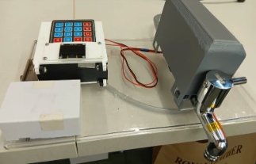
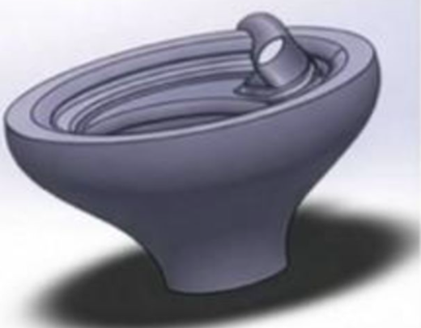

Aadya Kanchan / Engineering & Research
Maker Portfolio

NIRI | Intelligent Water Conservation
A patented IoT system that pairs automated flow control with behavioural insights to reduce water waste at the tap. Built through six iterations, with 25+ units deployed and 100,000+ litres saved.

AquaFlux | Passive Vortex Drainage
A zero-energy retrofit insert that uses vortex flow to improve drainage and reduce urban waterlogging. Refined through ANSYS simulations and physical trials, achieving 22–89% higher discharge.

Arogya Dx | Microfluidic Lipid Screening
A reagent-free prototype exploring rapid blood/plasma lipid screening through microfluidics and optical sensing. Designed to make preliminary testing more accessible in rural and resource-limited communities.

GIS | Mapping Groundwater Change
A geospatial study of groundwater levels across Karnataka’s Bangarpet Taluk. Combines well data, spatial mapping and seasonal comparisons to investigate depletion and inform local water management on best rechargeable zones.